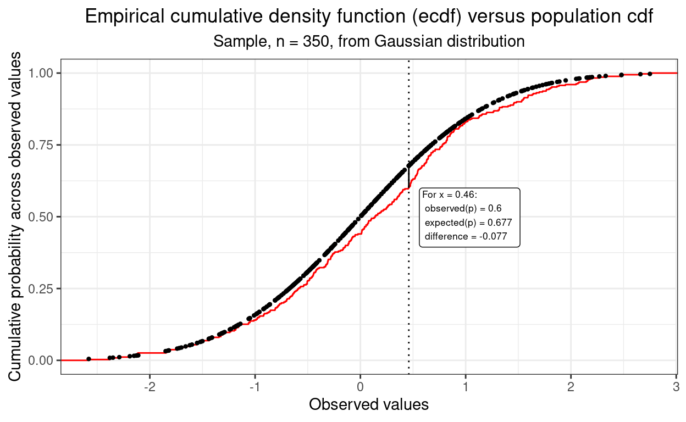

[Updated 17.xi.23 to add link to Tests of fit to Gaussian distribution.]
Geeky bit: histogram with Gaussian fit line
This first bit of code was just going to be to generate a little graphic for this post but actually it reminded me of something I always forget when trying to create the old (cliché?) plot of a Gaussian curve superimposed on a histogram: the easiest way to fit the y scaling is to use density not count for the histogram using after_stat(density) to change the default y scale of the histogram from a count to density (i.e. proportion):
geom_histogram(aes(x = x,
after_stat(density)))Show code
### just creating a graphic for the post
### get a tibble with the density of the standard Gaussian distribution from -3 to 3
tibble(x = seq(-3, 3, .05),
y = dnorm(x)) -> tibDnorm
### now generate a tibble of n = 350 sampling from the standard Gaussian distribution
set.seed(12345) # make it replicable
tibble(x = rnorm(350)) -> tibRnorm
# png(file = "KStest.png", type = "cairo", width = 6000, height = 4800, res = 300)
ggplot(data = tibRnorm,
aes(x = x)) +
geom_histogram(aes(x = x,
after_stat(density)),
bins = 20,
alpha = .6) +
geom_line(data = tibDnorm,
inherit.aes = FALSE,
aes(x = x, y = y)) +
geom_vline(xintercept = 0) +
### paramters work for knitted output
annotate("text",
label = "K-S test",
x = -2.3,
y = .1,
colour = "red",
size = 33,
angle = 29,
hjust = 0)
Show code
# dev.off()
### different sizing to get nice png
# png(file = "KStest.png", type = "cairo", width = 6000, height = 4800, res = 300)
# ggplot(data = tibRnorm,
# aes(x = x)) +
# geom_histogram(aes(x = x,
# after_stat(density)),
# bins = 20,
# alpha = .6) +
# geom_line(data = tibDnorm,
# inherit.aes = FALSE,
# aes(x = x, y = y)) +
# geom_vline(xintercept = 0) +
# ### changed parameters for the png
# annotate("text",
# label = "K-S test",
# x = -2.5,
# y = .1,
# colour = "red",
# size = 120,
# angle = 32,
# hjust = 0)
# dev.off()Back to the K-S test!
This post cross links with two others:
When I can I will also add to a shiny online app to implement these tests in my developing collection of shiny apps. All three posts also expand on entries in my online glossary for the OMbook.
But real data are never Gaussian in distribution!
So this is about testing whether or not a dataset of values, scores maybe, fits the Gaussian distribution. The simple answer for any real data I’ve every handled was “no”, and I’m sure that will remain true for any future real datasets I handle. That’s because the Gaussian distribution is a smooth distribution of scores from minus infinity to plus infinity and I think we can safely say that no real dataset, at least in my application areas of mental health and therapy data, is going to have values at minus or plus infinity. Equally, none I handle will be be truly continuous, i.e. smooth; they will always be “discrete” growing in finite steps. For example, on the mean item scoring of the CORE-OM, assuming that all 34 items are completed, the possible scores range from 0 to 4 in steps of 1/34, i.e., steps of 0.0294118. That means that the possible score range is from
0, 0.03, 0.06 … through to … 3.94, 3.97, 4.
So for a full 34 item CORE-OM there are 137 possible scores. That’s a lot of possible scores but it’s still a discrete set and not at all a smooth distribution from minus infinity to plus infinity. For the GAD-7 the score range is from 0 to 21, just 22 possible scores.
But we can still test for approximate fit
So we know the fit is never a perfect fit to the Gaussian for real data so the question is really:
“How well does the distribution of values/scores in the data approximate to the Gaussian?”
Turning that into a frequentist NHST (Null Hypothesis Significance Test) that becomes:
“Is is it sufficiently unlikely that the distribution of scores we see in our dataset would have arisen by random sampling from an infinitely large population in which the data really do have a Gaussian distribution?”
So the null hypothesis about the population is that it does have a Gaussian distribution. What we are doing with tests of fit is applying some test to see if we can reject that model/hypothesis. We usually do that using the conventional criterion that we reject that null model/hypothesis if the probability comes out below .05, one in twenty.
As with pretty much any single level test of a single variable we have the usual caveats that the test will only give us an unbiased test of fit, i.e. reject the null model on less than one time in twenty when the population model is Gaussian if:
the dataset really is a random sample from an infinite population, and
all the values/scores in the dataset are independent of one another (“independence of observations”).
However, the general question above still begs the question: “on what criterion of fit?” In fact there are a number of possible tests because a univariate distribution can deviate from Gaussian in many ways and different criteria of fit have differing sensitivities to different deviations from Gaussian. I’m starting some posts about testing for fit to Gaussian distributions with one test, the first one I learned.
The K-S test
This is the Kolmogorov-Smirnov test and it used to be the default test of fit to Gaussian distribution in SPSS (but it’s a very long time since I used SPSS). The K-S test uses some clever maths, based on some clever statistical theory (see https://en.wikipedia.org/wiki/Kolmogorov%E2%80%93Smirnov_test for details) to test the biggest observed difference between the empirical cumulative distribution of the data and the cumulative distribution that would be expected from a Gaussian distribution. What does that mean?!
Empirical cumulative distribution functions
(I think I see that abbreviated both as “ecdf” and as “ECDF” but never as “e.c.d.f.” or “E.C.D.F.”) Here’s the empirical cdf for the data above, that’s simulated data n = 350 that is from a Gaussian distribution.
Here is the ecdf for a simulated sample n = 350. That sample has been created using R’s rnorm() function which gives an approximation to a truly random, independent observation, sample from a true Gaussian population. It’s as good an approximation as I will ever really need (and this is not the place to dig into why it’s an approximation though a bit of that will come back to us later).
Show code

So there’s that typical S shaped (ogive) shape which is the cumulative equivalent of the “bell shaped” histogram shape we saw above.
When used to test the fit of a single sample against a theoretical distribution, here the Gaussian distribution, the criterion of mistfit the K-S test uses is the size of the largest vertical difference between the observed ecdf and the cdf for the Gaussian. (That’s a cdf not an ecdf because it is not empirical, it is defined by the Gaussian population model.) That’s easier to understand from a plot than from narratives like that I think. Here’s the plot.
Show code
tibRnorm %>%
arrange(x) %>%
mutate(x = round(x, 2),
indVal = 1 / 350,
cumP = cumsum(indVal)) %>%
select(-indVal) -> tibECDF
tibble(x = seq(-3, 3, .01)) %>%
mutate( x = round(x, 2),
y = pnorm(x)) -> tibQnorm
tibECDF %>%
left_join(tibQnorm, by = "x") %>%
mutate(diff = cumP - y,
absDiff = abs(diff),
minDiff = if_else(diff == min(diff), TRUE, FALSE),
maxDiff = if_else(diff == max(diff), TRUE, FALSE),
maxAbsDiff = if_else(absDiff == max(absDiff), TRUE, FALSE)) -> tmpTib
tmpTib %>%
filter(maxAbsDiff) %>%
mutate(x2 = x + .1,
txt = paste0("For x = ",
x,
":\n observed(p) = ",
round(cumP, 3),
"\n expected(p) = ",
round(y, 3),
"\n difference = ",
round(diff, 3))) -> tmpTib2
ggplot(data = tibRnorm,
aes(x = x)) +
stat_ecdf(colour = "red") +
geom_point(data = tmpTib,
aes(x = x, y = y),
size = .8) +
geom_linerange(data = tmpTib2,
aes(ymin = cumP, ymax = y)) +
geom_label(data = tmpTib2,
aes(x = x2, y = cumP, label = txt),
hjust = 0,
vjust = 1,
size = 2.3) +
geom_vline(xintercept = tmpTib2$x,
linetype = 3) +
ylab("Cumulative probability across observed values") +
xlab("Observed values") +
ggtitle("Empirical cumulative density function (ecdf) versus population cdf",
subtitle = "Sample, n = 350, from Gaussian distribution")
That plot shows the observed ecdf and the cdf expected from the Gaussian population model. Rather than showing the latter as a continuous curve I have plotted it as a series of points, each corresponding to a value that was in the sample data as it’s the vertical distances between those points and the corresponding point on the ecdf that the K-S test inspects.
I have marked where the largest absolute vertical distance between the ecdf and cdf and annotated the plot to show what the difference in proportions was at that point. This is the criterion of misfit used by the K-S test.
I think that’s a rather nice example of one way of testing for for fit to the Gaussian distribution and I like that it gives us a clear graphical sense of what’s going on in an NHST (even if I don’t begin to understand the maths). Here’s the raw K-S test ouput from the ks.test() function in R.
Show code
ks.test(tibRnorm$x, "pnorm", alternative = "two.sided")
Asymptotic one-sample Kolmogorov-Smirnov test
data: tibRnorm$x
D = 0.078681, p-value = 0.02624
alternative hypothesis: two-sidedOoops! Statistically significant at the conventional p < .05 despite the fact that it’s a simulation so we know that’s a “false positive” as we know the model is sampling from a true standard Gaussian distribution. So here we have just hit on a sample where that maximum deviation is unlikely to have arisen by random sampling of samples of n = 350 from a population distribution that really is a standard Gaussian distribution.
Oops, lets check that that’s just our luck! I’ve simulated 10,000 K-S tests on samples of n = 350 taken from the standard Gaussian distribution.
Here is the breakdown of the significance test results.
Show code
set.seed(12345)
sampN <- 350
nReplicns <- 10000
tibble(replicn = 1:nReplicns) %>%
rowwise() %>% # to get a new sample for each replication
mutate(x = list(rnorm(sampN))) %>%
unnest_longer(x) %>%
group_by(replicn) %>% # to test each replication
summarise(ksP = ks.test(x, "pnorm", alternative = "two.sided")$p.value) %>%
### test those at the conventional alpha of .05
mutate(sig = if_else(ksP < .05, "p < .05", "NS")) -> tibSimKSp
tibSimKSp %>%
tabyl(sig) %>%
flextable() %>%
autofit()sig | n | percent |
|---|---|---|
NS | 9,542 | 0.9542 |
p < .05 | 458 | 0.0458 |
For what it’s worth, here’s the distribution of those 10,000 simulation p values.
Show code
vecFillColours <- c("NS" = "green", "p < .05" = "red")
ggplot(data = tibSimKSp,
aes(x = ksP, group = sig)) +
geom_histogram(aes(fill = sig),
breaks = seq(0, 1, .05)) +
scale_fill_manual("Significance",
values = vecFillColours)
OK, so it looks as if the K-S test is behaving OK at least as far as having a false positive rate about .05 as it should have.
K-S test on real data
Show code
tibDat %>%
summarise(nCORE = n(),
minCORE = min(firstScore),
maxCORE = max(firstScore),
rangeCORE = maxCORE - minCORE,
meanCORE = mean(firstScore),
sdCORE = sd(firstScore)) -> tibCOREparms
tibble(x = seq(tibCOREparms$minCORE, tibCOREparms$maxCORE, tibCOREparms$rangeCORE / tibCOREparms$nCORE)) %>%
# rowwise() %>%
mutate(y = dnorm(x, mean = tibCOREparms$meanCORE, sd = tibCOREparms$sdCORE)) -> tibDnorm
# png(file = "testGauss.png", type = "cairo", width = 6000, height = 4800, res = 300)
ggplot(data = tibDat,
aes(x = firstScore)) +
geom_histogram(aes(x = firstScore,
after_stat(density)),
bins = 30,
alpha = .6) +
geom_line(data = tibDnorm,
inherit.aes = FALSE,
aes(x = x, y = y)) +
geom_vline(xintercept = tibCOREparms$meanCORE) +
xlim(c(0, 4)) +
xlab("Initial CORE-OM score") +
ggtitle("Histogram of initial CORE-OM scores, n = 182",
subtitle = "With Gaussian distribution shape fitted to observed mean and SD")
Hm, that’s perhaps a surprisingly good fit judging by eye.
Show code
ks.test(tibDat$firstScore, "pnorm", alternative = "two.sided")Warning in ks.test.default(tibDat$firstScore, "pnorm", alternative =
"two.sided"): ties should not be present for the Kolmogorov-Smirnov
test
Asymptotic one-sample Kolmogorov-Smirnov test
data: tibDat$firstScore
D = 0.83585, p-value < 2.2e-16
alternative hypothesis: two-sidedBut that KS test result says that there is a likelihood of seeing a misfit as big as the KS test found that is less than 1 in 10^15, i.e. less than 0.000,000,000,000,001. What?! What has happened? Is it something to do with that warning?
K-S test warning
The warning is not the cause of the problem. What has happened is that we were testing a simulated sample from a truly Gaussian distribution that had used the full precision of R’s numbers that meant that creating a sample of n = 350 made it vanishingly unlikely that there would be any ties in that sample.
(Geek bit: computer numbers are never truly continuous as computer construct numbers using binary bits of information (i.e. zero or one). However, the default “double precision” numbers of R have a precision that they can two numbers differing by only 1.4901161^{-8}. That’s scientific representation of the minimum distinction between two R double precision numbers, in ordinary decimal format that’s 0.000,000,014,901,16. Taking a sample of only n = 350 where numbers are distinct if the differ by more than that amount makes it vanishly unlikely that there will be any times in the sample: the data might as well be continuous.
Scaling and location
So requirement for the K-S test to be unbiased, i.e. to turn up a false positive rate of .05 if you are testing against that and if the samples are from a Gaussian distribution: of continuous data has been lost but that’s not the problem here. The problem is that the simple KS test tests fit to the standard Gaussian distribution with its range from minus infinity to plus infinity and its mean of zero and SD of 1.0. That is a “single sample” K-S test: one sample is compared to the properties of the assumed population distribution.
However, as noted above, CORE-OM scores cannot fit the standard Gaussian not only because they’re not continuous but much more seriously because they can’t (realistically) have a mean of zero as zero is the minimum possible score on the CORE-OM. In fact, the CORE-OM scores range from zero to four and the observed mean is 1.92 and SD of 0.47. I can reset the KS test to test against a Gaussian distribution with those observed parameters (i.e. the population mean and SD). What I doing, in effect though not in the actual maths, is that I am relocating the scores to have a mean of zero and rescaling them to have an SD of 1.0.
Show code
ks.test(tibDat$firstScore,
"pnorm", tibCOREparms$meanCORE, tibCOREparms$sdCORE, # that's added the mean and SD
alternative = "two.sided",
exact = TRUE,
simulate.p.value = tRUE,
B = 10000)Warning in ks.test.default(tibDat$firstScore, "pnorm",
tibCOREparms$meanCORE, : ties should not be present for the
Kolmogorov-Smirnov test
Exact one-sample Kolmogorov-Smirnov test
data: tibDat$firstScore
D = 0.058888, p-value = 0.5337
alternative hypothesis: two-sidedSame warning of course about ties in the data but now the misfit is signalled as non-significant.
The catch with this is that we now have a biased test because we used information from the sample to create our comparison distribution.
The bias issue
Let’s creat 10,000 samples from distributions that are Gaussian in shape but have mean values greater than zero and SD bigger than 1.0.
Show code
set.seed(12345)
sampN <- 350
nReplicns <- 10000
tibble(replicn = 1:nReplicns,
popMean = runif(nReplicns, min = 1, max = 3),
popSD = runif(nReplicns, min = 2, max = 3)) %>%
rowwise() %>% # to get a new sample for each replication
mutate(x = list(rnorm(sampN, mean = popMean, sd = popSD))) %>%
unnest_longer(x) %>%
group_by(replicn) %>% # to test each replication
summarise(sampMean = mean(x),
sampSD = sd(x),
ksP = ks.test(x, "pnorm", sampMean, sampSD, alternative = "two.sided")$p.value) %>%
### test those at the conventional alpha of .05
mutate(sig = if_else(ksP < .05, "p < .05", "NS")) -> tibSimKSpBiased
tibSimKSpBiased %>%
tabyl(sig) -> tmpTib
tmpTib %>%
filter(sig != "NS") %>%
select(percent) %>%
pull() -> falsePosBiased
tmpTib %>%
flextable() %>%
autofit()sig | n | percent |
|---|---|---|
NS | 9,998 | 0.9998 |
p < .05 | 2 | 0.0002 |
OK, so the observed false positive rate of 0.0002% is way below the rate of .05, or 5%, that we should be seeing if the test were unbiased.
For what it’s worth, here’s the distribution of those 10,000 simulation p values.
Show code
vecFillColours <- c("NS" = "green", "p < .05" = "red")
ggplot(data = tibSimKSpBiased,
aes(x = ksP, group = sig)) +
geom_histogram(aes(fill = sig),
breaks = seq(0, 1, .05)) +
scale_fill_manual("Significance",
values = vecFillColours)
I am impressed by the obviousness of the bias! Point made and clearly!
Summary
There are multiple ways of testing for statistically significant misfit to Gaussian distribution because there are multiple ways in which a distribution can differ from Gaussian. More on this in the next post here: Tests of fit to Gaussian distribution
No real distributions of raw data I work with will have true fit to the standard Gaussian distribution:
they won’t have possible limits at minus and plus infinity
they won’t be continuous (i.e. they will only be able to take discrete values)
they almost certainly won’t have mean zero nor SD 1.0
However,
some intermediate variables created in the computation of some modern, sophisticated statistical analyses may be expected to have Gaussian distribution, perhaps even standard Gaussian distribution, so it can be useful to test them for misfit to get an indication of possible problems with the findings of the analyses.
bootstrap confidence interval estimates may be more stable and accurate if the bootstrap replications show Gaussian (but not necessarily standard Gaussian) distribution so it can be useful to look at their distributions to get an indication of possible problems (and sometimes of the best bootstrap CI method to use to get the CI)
The Kolmogorov-Smirnov, K-S, test has a nice, easy to understand test and it’s fine if you really can expect a “standard Gaussian” population distribution, i.e. one with mean of zero and SD of 1.0.
However, if there is no reason to think that the population distribution is standard Gaussian, but it is still interesting to test for misfit to Gaussian with mean != zero and SD != 1.0 then the K-S test is not a good test to use partly because it is biased. (There are other issues too but that’s getting seriously geeky.)
Go to Tests of fit to Gaussian distribution to see alternative tests that keep the correct false positive rate (typically .05 when testing for p < .05) for samples from arbitrary Gaussian distributions and which have much greater sensitivity for most deviations from Gaussian than the K-S test.